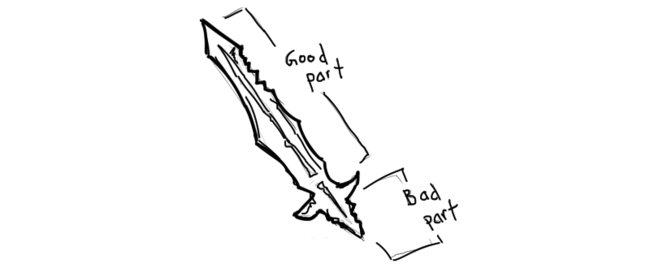

JavaScript X 
こんにちわ
- チェン ハン
- ICT事業部 WEBソリューション部 ECSuitesチーム
- 普段はPHPで開発やっている
- JavaScriptが好き、以前の仕事で多いに扱った
- でも最近はあまり触っていないので、勉強し直そうと思う
- Pythonも、Lispも好き
- 日本語難しいアルよ
JavaScriptの歴史
- 1995～：誕生と現代仕様ベースライン
- 2005：Ajaxの確立
- 2008～2009：次世代への架け橋(ES5)
- 2015.6～：ES6

- Schemerとしても有名
- Netscapes社にてブラウザで動作する言語の設計を任された
- 10日間でJavaScriptを設計完了
基本設計
- Cの基本文法
- Javaのデータタイプ、メモリ管理、ライブラリ
- Scheme言語の第一級関数
- Self言語のプロトタイプ
- 非同期処理
- パックリまくる
僅か10日で設計できたが...
- 言語機能は限定的に
当初はJava Appletの補完として設計されてた
- 大規模開発はそもそも考慮されてない
- パフォーマンスにも無関心
ポップアップできればいい
出来上がったJavaScript
- 明らかの設計ミス
グロバール変数、セミコロン自動補完など
- 開発者を混乱させる文法
with構文、block構文など
- 癖のある機能
第一級関数とプロトタイプなど
- WEBの繁栄と共に普及はしたものの
長年バカにされてた時期も
創造者の悔い言葉
Ajax開発者達はJSが好きだと言っているが、JS嫌いな人も大勢にいる、私もその一人だ...サミュエル・ジョンソンが言うように: それの良いところはオリジナルではない、それのオリジナルは良くない
やはり仕事サボったら後は後悔する
JavaScriptをDisてません
JavaScriptの歴史
- 1995～：誕生と現代仕様ベースライン
- 2005：Ajaxの確立
- 2008～2009：次世代への架け橋(ES5)
- 2015.6～：ES6
JavaScriptの再発見
- Google MapとGmailが登場
- Ajax開発手法が確立された
いろんな
- JavaScriptの復権
JavaScriptの欠点も注目されるようになる
JavaScriptの歴史
- 1995～：誕生と現代仕様ベースライン
- 2005：Ajaxの確立
- 2008～2009：次世代への架け橋(ES5)
- 2015.6～：ES6
架け橋なるES5
- 基本的にES3と互換性を持つ
- 新しい便利な文法
- ネイティブJSONライブラリ
- オブジェクト機能強化
"use strict;"
- ES3との互換性を持たない
- 一部曖昧な、あるいは間違いを起こしやすい文法を廃止
- グローバル変数の誤作成は防止できる
- 部分的に展開可能
- JavaScript当初の設計ミスを可能な限り直す
パフォーマンスの改善
JITエンジン: v8など

銀の弾は存在しない
function add (a, b) {
return a + b;
}
var c = add(1, 2);
//JIT：よし、出番だ、速くしてみせる
int function add (int a, int b) {
return a + b;
}
//どうや、早くなっただろう
...
var d = add('hello', 'world');
//JIT: フザケルナ！
JavaScriptの歴史
- 1995～：誕生と現代仕様ベースライン
- 2005：Ajaxの確立
- 2008～2009：次世代への架け橋(ES5)
- 2015.6～：ES6
現代JavaScriptが目指す所
ECMAScript 6
- WEBのアセンブリ
WebAssembly
ブラウザが実行可能なバイナリ形式
- asm.js
"use asm"; var a = 10 | 0; //明示的にaを数値と宣言する int a = 10; - WebAssembly
まとめ
- JavaScriptは完璧に設計された言語ではない
- だからと言って、ダメ言語でもない
- 事実上ブラウザ上動作する唯一の言語である
- だからと言って、ブラウザでしか動作しないわけでもない
- JavaScriptはすごく頑張って、進化を遂げている
- JavaScriptを勉強しましょう
質問?
最後に
みんな気づいたかな？
このスライドはHTML5とJavaScriptで作られている。
このスライドはHTML5とJavaScriptで作られている。
http://gpgkd906.github.io/javascriptcross/
ご清聴ありがとうございました